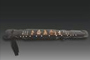

设为首页
收藏本站
登录
注册
首页
文学
历史
今日：
30
| 昨日：
100
| 贴子：
1250000
| 会员：
30000
| 欢迎新会员：
前因后果
查看新贴
文学
曲水流觞
文艺随笔区，此情可待成追忆，只是当时已惘然
1310 / 1万
魏延赞
2017-4-2 20:09 雪天利箭
版主: 水镜门生, 螺旋真理
艺文类聚
琴棋书画等文艺综合区，松风吹解带，山月照弹琴
5660 / 5万
陆耀良长篇三国评话 ...
2017-9-22 16:47 我不是..

版主: 策马定江山
历史
九州春秋
中华历史讨论区，人世几回伤往事，山形依旧枕寒流
3845 / 4万
抗战牺牲的共产党...
2017-9-16 09:22 吕布..
版主: 水镜门生, 螺旋真理
海国图志
世界文明史讨论区，坐地日行八万里，巡天遥看一千河
1056 / 1万
希腊伪史批判（何新）
2017-12-23 22:34 心岚..
版主: 策马定江山
在线会员 - 102 人在线 - 4 会员(0 隐身), 98 位游客 - 最高记录是 1811 于 2013-8-26.
管理员 大司马录尚书事 持节都督 会员
雪天利箭 方苑枝 湘媛穑 红色五月